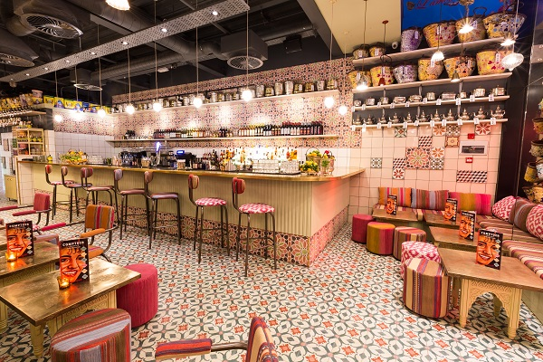
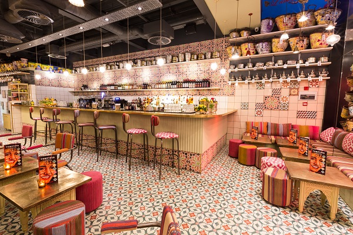
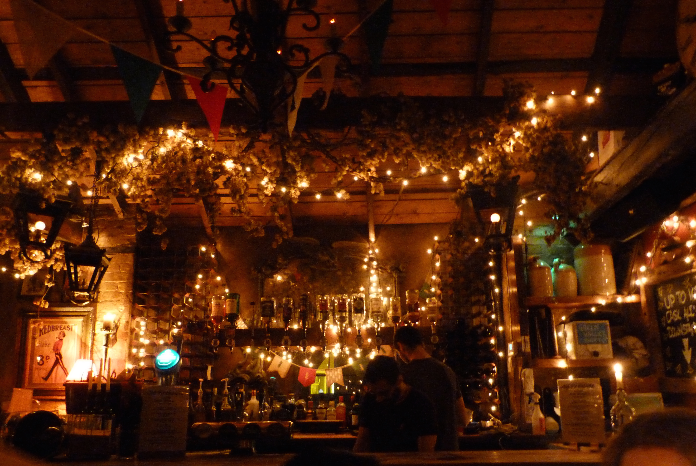

*
X-Mas in eXeter
A one-stop site for all things christmas related in Exeter, Devon
Shopping in Exeter


Princess Hay: with over 70 shops in Princesshay, covering the very best of the high street names as well as some more specialised and independent stores. So if you’re looking for fashion, beauty, something for the house, or the latest gadget, we’ve probably got it right here. We’ll look forward to seeing you soon! Plus there’s even more reason to visit Princesshay Exeter, our neighbour John Lewis, is a complementary store to the great offering we have here in Princesshay.
Eat & Drink
 

Exeter also has some quirky pubs, cafés and restaurants which serve excellent food that is normally locally sourced as well, including Ruby Modern Diner, Tea on the Green, Fresha and Real Food Exeter. Princesshay shopping quarter is home to the familiar so if there’s a chain restaurant that you love you’ll find it there, or head to Gandy Street and Queen Street for smart cocktail bars and restaurants, including the lively Las Iguanas. When the weather’s good, Winter or Summer, there’s nothing better than enjoying a picnic outdoors. In Exeter there’s plenty of places to do this, on Exeter’s Historic Quayside, by the Cathedral, in Northernhay Gardens or on the lawns in Southernhay. Whether it’s breakfast, lunch, dinner or just coffee and a cake eating out in Exeter is a great experience – and there’s always loads to choose from!

Events
Exeter Christmas Market:
This year's Christmas Market will run from Saturday 19th November until Sunday 18th December.
The Cathedral Green, at the heart of the city centre, will be brought to life by this special seasonal Market, with stalls offering unique, handmade and unusual gifts, decorations and food items – everything needed for a perfect Christmas celebration and to create a real Christmas buzz at the heart of the city.